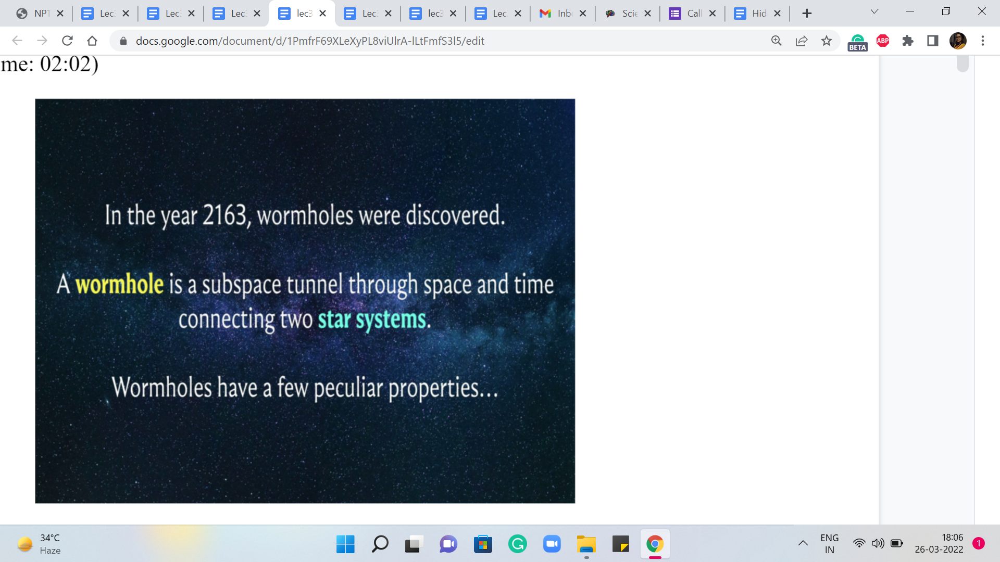
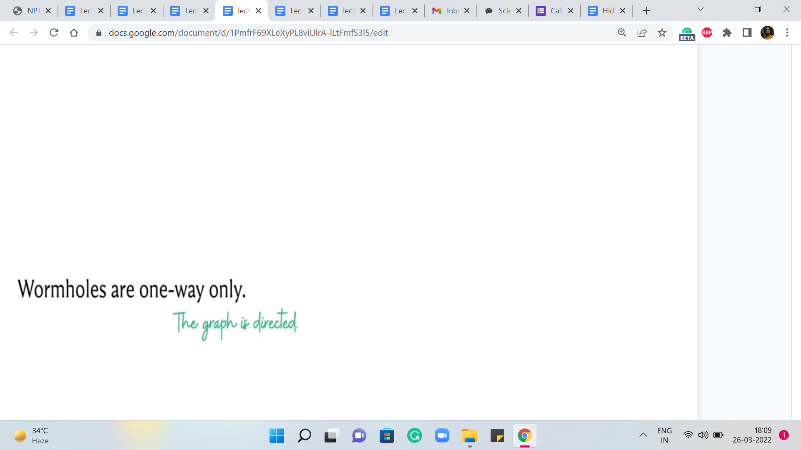
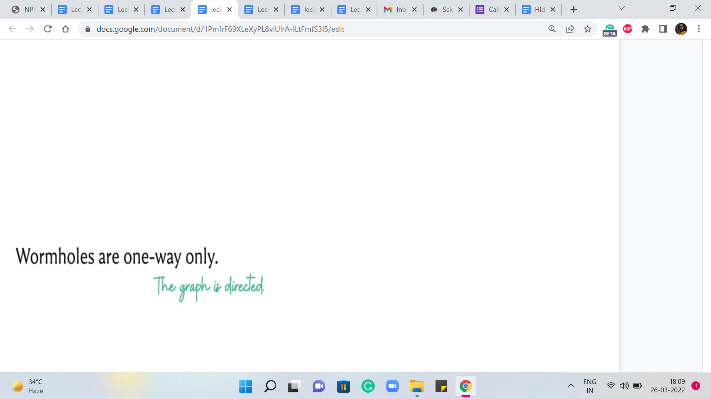
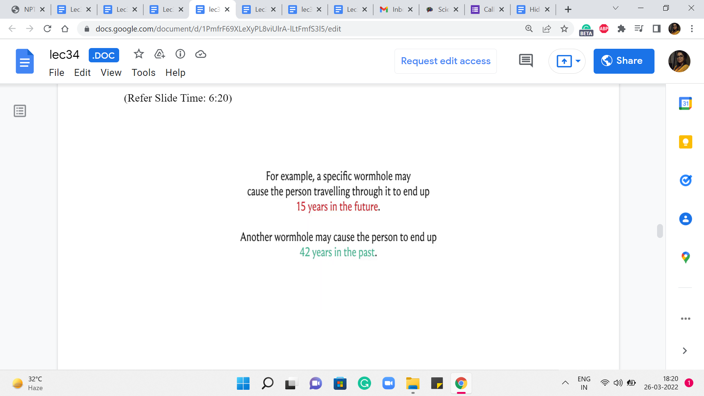
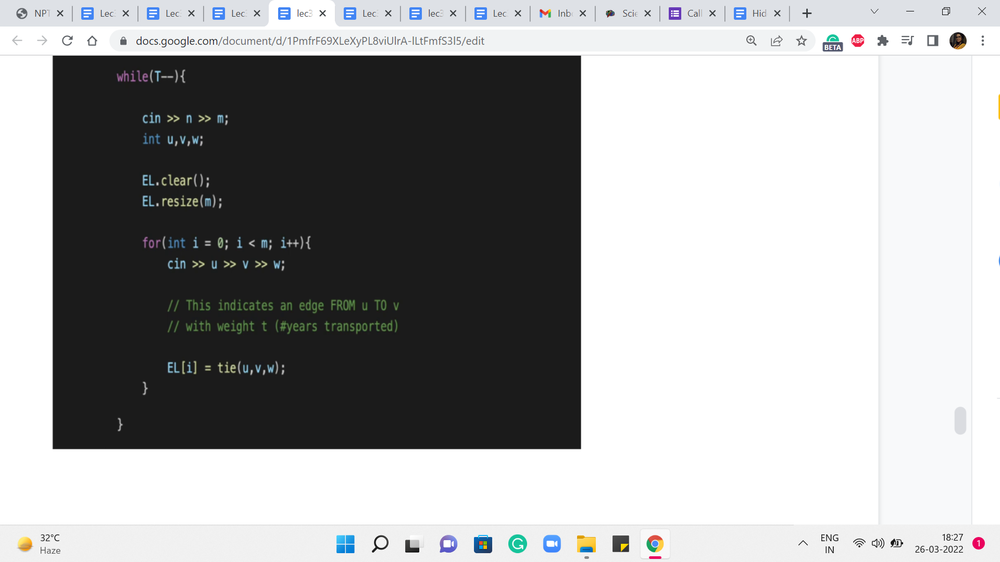
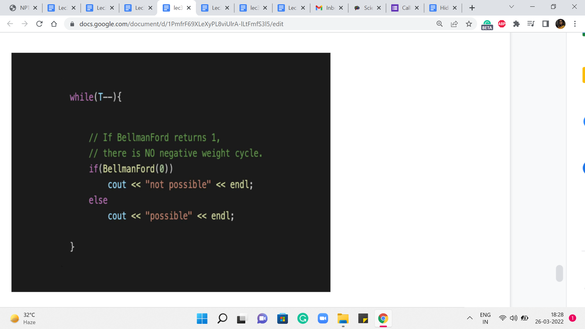
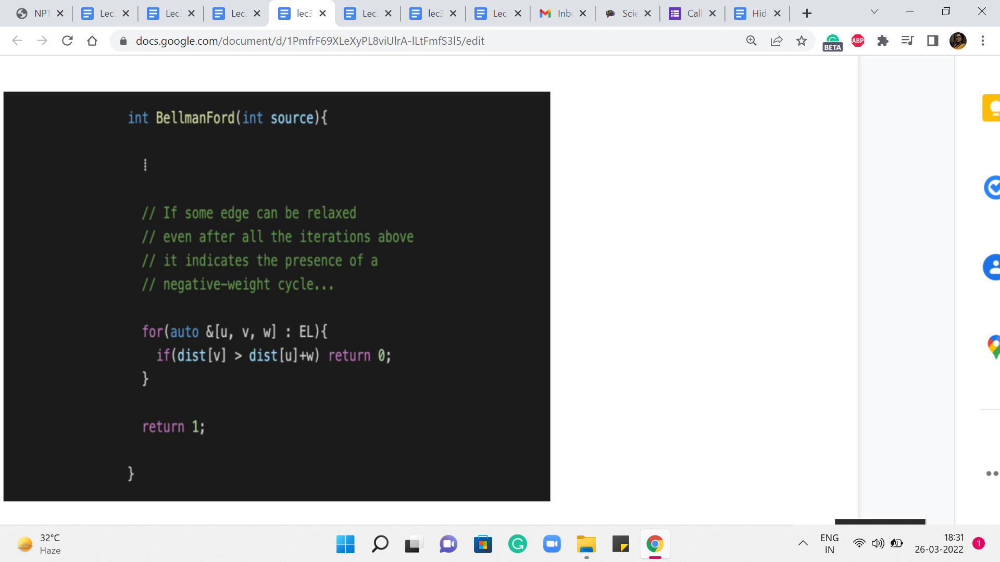

M 2 (Wormholes [Bellman-Ford | Negative
Lecture - 34
Shortest Paths - Module 2 (Wormholes [Bellman-Ford | Negative Cycles])
Welcome back to the second segment of the second module in the sixth week on shortest paths. So, what we have discussed so far in the previous segment is a method to deal with the most general situation when it comes to edge weights, where we even allowed for the presence of negative cycles.
And the way things work here is that our obligation is to only detect a negative cycle if it exists because, in such a situation, the very notion of shortest paths becomes ill-defined anyway. And in the absence of negative cycles, we are supposed to return the shortest path information, as is usual. So, we saw how to do this using what is popularly known as the Bellman-Ford Algorithm.
And essentially, this involves ‘n-1’ iterations of relaxing every tense edge. And at the very end, we simply check if there are any tense edges that still remain. And if they do, then that is a sure sign of the presence of a negative cycle, and we return as much. But otherwise, we would have, by then, correctly computed all the shortest path distances from the source.
So that is what I wanted to say by way of recap. If all of this went by too fast, chances are that is because you have not had a chance to go through the first segment of this module. So, please make sure to do that. Because here what we are going to do is implement whatever we have learned so far. And we are going to do that in the context of this problem called ‘wormholes.’ As usual, you can find a link to the problem statement in the description of this video. And let me begin by telling you about the problem.
(Refer Slide Time: 02:02)

So, we are told that in the year 2163, which is when wormholes were discovered. A wormhole is a subspace tunnel through space and time connecting two star systems. And wormholes have a few peculiar properties. Now, you can probably already guess, given the context in which I am presenting this problem that we want to think about star systems as the vertices of some graph and a wormhole as an edge that connects them.
So, let us just keep that at the back of our minds, and then continue with the story here. Now, I should mention that in the original problem, these properties are given as a list. And I have taken the liberty of rearranging the items on the list in a way that the sequence is just more convenient for me to share with you; your experience may be slightly different if you are reading the problem statement directly.
(Refer Slide Time: 2:59 & 03:19)
 

Alright. So, the first thing that I want to tell you is that a wormhole has two endpoints, each situated in a star system. This sounds very convenient. And it confirms our earlier suspicion that we want to model wormholes as edges and star systems as vertices in some sort of a graph abstraction.
Alright. The next thing we are told is that the wormholes are one way only. This also has a fairly natural interpretation in the language of graphs. We want to say here that our edges are directed.
(Refer Slide Time: 03:31 & 04:22)


Now the next thing that we have is the following. The time that it takes to travel through a wormhole is negligible. Now, wait a minute. This does sound a little bit funny. Because we are thinking of wormholes as edges, this is making it sound like we do not have any natural concept of edge weight.
Remember, when we were working with the email problem, the cables that connected to servers had some latency going on. So, that was a natural notion of edge weight. But here, it seems like we are getting travel time through the wormhole for free. So, that does make you wonder: So, maybe edge weights are coming up in some other form that we have to watch out for – So, let us just keep this in mind that the wormhole travel comes for free, at least in terms of time.
Now, we are told that a star system may have more than one wormhole endpoint within its boundaries. This just means that our vertices may have in-out degrees that are possibly greater than one. That is what it would mean for a single star system to accommodate more than one wormhole endpoint. So, this is perfectly fine.
(Refer Slide Time: 4:44 & 05:13)


The next thing that we are told is that for some unknown reason, starting from our solar system, it is always possible to end up in any star system by following a sequence of wormholes. So, this means that there is a path starting from a particular vertex in a graph, the one that corresponds to our solar system to any other vertex in the graph. So, this is some sort of reachability promise in the graph structure.
Next, we are told that between any pair of star systems there is at most one wormhole in either direction. So, this is essentially an assurance that there are no multiple edges. And there even are not any directed cycles of length. So, you cannot go and immediately come back. So, this is just that there are no multi edges.
(Refer Slide Time: 5:37 & 06:05)


The next thing is that there are no wormholes with both endpoints in the same star system. Again, in the language of graphs, this simply means that there are no self-loops. And combined with the previous fact, what we have is that we are working with a simple graph here. So, far, so good. There does not seem to be a whole lot of drama. Everything seems to fall in place nicely with our anticipated graph model.
Let us look at the next property. So, we are also told that all wormholes have a constant time difference between their endpoints. Let us elaborate on this a little bit further because this is now beginning to sound possibly a bit confusing.
(Refer Slide Time: 6:20)
 
So, here are a couple of examples to illustrate what the previous property might mean. So, a specific wormhole may cause the person traveling through it to end up 15 years in the future. And another wormhole may cause the person to end up 42 years in the past. Okay. So, this could happen. And perhaps this is our first indication of some sort of edge weight concept. Maybe the weights have to somehow reflect these time differences.
But how exactly do we specify the weights? And to what end? Well, only time will tell I guess because we still have to figure out what our task is going to be. What are we supposed to do with all of this information about star systems and wormholes, and what not?
(Refer Slide Time: 07:11 & 07:55)


So, what we are told next is that we have a brilliant physicist living on earth, who wants to use wormholes to study the Big Bang. Now, that does sound pretty ambitious. Let us look at what else we have in store. So, we are told that advanced means of transportation have not been invented yet. So, you cannot simply go from any star system to any other star system directly. But you can use these wormholes to find your way around.
And this of course falls in line nicely with all the graph modeling that we have been doing in parallel. So, transportation between star systems seems to manifest naturally as paths in our graph. But with all that said, we still do not know what we are looking for. So, let us continue reading the problem statement here.
So, we are told that our scientist friend wants to reach a cycle of wormholes somewhere in the universe that causes her to end up in the past. And we are also told why this is of interest to her. Because once she finds such a cycle of wormholes, then she can keep going round and round around that cycle. And that will keep taking her back further and further in the past.
And hopefully, ultimately, at some point, she will be so far back in the past that she would be witnessing the Big Bang, and that would presumably allow her to study it. Or so the story goes. So, that is what we are looking for. We are looking for a cycle of wormholes, that takes our scientist friend back in the past.
Now, intuitively by now, this is probably ringing some bells. And perhaps, well, since we are told that we are looking for the cycle of wormholes, it is probably not very farfetched to imagine that we are looking for a cycle in our graph. And since we are told that this cycle of wormholes must have this property, that it takes the scientists back in the past, we probably want to imagine that this cycle is some sort of a negative weight cycle.
But for that to actually happen, we need to figure out how exactly we want to model our edge weights. So, this would be a good time to pause and think about how would you ascribe weights to the edges so that a cycle of wormholes that takes the scientist back in the past will correspond to a negative weight cycle in the graph that we have built up so far? Take a moment and come back once you are ready.
So, I think a fairly natural thing to do is to use the time difference as the edge weight. So, let us say that we have a wormhole that takes somebody ‘x’ years into the future, then we might want to associate a weight of x with the edge that represents this wormhole. Similarly, if we have a wormhole that takes somebody ‘x’ years in the past, then the edge corresponding to this wormhole should have a weight of -x to signify that you are moving backward in the passage of time.
So, now notice that if you just add up the edge weights of any sequence of wormholes, then that sum total will reflect the total amount of time travel that you have done if you were to actually embark on a journey that involves this particular sequence of wormholes. And in particular, you can check that a wormhole cycle that takes somebody in the past is going to be a negative weight cycle if we were to use these edge weights.
So, we know that with the appropriate graph model, this problem essentially boils down to the issue of detecting whether we have a negative weight cycle in our graph or not. And remember that Bellman-Ford is designed for precisely this purpose. So, we should be able to solve this by simply implementing Bellman-Ford. Before we do that, though, let us just do a quick sanity check on the constraints to be sure that we will be safely within the time limits.
(Refer Slide Time: 11:11)

So, of course, the problem statement concludes by asking us to write a program to determine if we have a cycle of wormholes that takes our scientist friend back in the past. And we are also given that the number of star systems and the number of wormholes is at most 2000 each. This means that the product of the number of vertices and edges in our graph is of the order of 4 * 106, which means that we should be pretty safe in trying to implement Bellman-Ford for this problem. So, let us go ahead and take a look at the code.
(Refer Slide Time: 11:47)
 
To begin with, I am going to implement this as an edge list, again, just for convenience because the inner loop in the Bellman-Ford Algorithm just goes over all the edges. So, having all the edges in a list, I felt was a fairly natural way to do things. But you can do this equally using adjacency lists, or even adjacency matrices.
The only thing to remember when you are working with adjacency matrices is that the inner loop where you go over all edges will essentially require a scan of the entire matrix. So, the running time of Bellman-Ford becomes order n3 when you are working with an adjacency matrix representation. So, in general, it would be better to stick to an adjacency list or an edge list representation.
But if you need to use an adjacency matrix for some other reason, just be mindful of the fact that the worst-case running time would be given by order n cubed. Okay. So, this is just a fairly standard reading-in of the input, let us just move along and talk about how we would present the output, assuming that we have written a function called Bellman-Ford, which returns one if there were no negative cycles, and it returns 0 otherwise.
So, here we are simply reporting our outcomes based on what Bellman-Ford tells us. Remember that we invoke the Bellman-Ford function with information about the source vertex, which in this case is the vertex that represents the solar system because that is where we are starting out. Let us move along and talk about how we implement Bellman-Ford.
(Refer Slide Time: 13:26)


Here is the Bellman-Ford function, which, again, takes just the identity of the source vertices on the parameter. The remaining variables that have the information about the graph are global anyway so that the function can freely access it. So, this is simply the initialization as always, we have a distance array, which is initialized so that every value is some very large number, which is identified by this constant INF.
But we always remember to initialize the distance of the source to 0. And here you could also say that the predecessor of the source is the source vertex itself. We are maintaining a predecessor array here, although we do not really need it for this problem.
It is very similar in behavior to Dijkstra in the sense that the predecessor array will allow you to go back and retrace a path in case you need to output one. Alright. So, this is the fairly standard initialization step. Let us move on to the main body of the Bellman-Ford algorithm. Remember that in this algorithm, all we do is relax every tense edge and we repeat this ‘n-1’ times.
So, the ‘n-1’ repetitions are being taken care of by the outermost ‘for’ loop. And the inner ‘for’ loop is essentially a loop that goes over every edge by simply traversing the edge list. And the logic that you see inside this nested ‘for’ loop is the logic for checking if the edge that is currently under consideration is tense or not.
And if it is tense, then we just appropriately update the values in the distance array, and we also update the predecessor pointer. Remember that in this algorithm, you do not really need any additional special data structures to be storing the distance values because we do not need to keep looking up the minimum values or anything like that. So, this is really all that is there, do it. Now when you want to do the actual detection of the negative cycle, we do this check one final time.
(Refer Slide Time: 15:40)

So, we go over the edge list once again, after we come out of this ‘for’ loop. And if we discover even one edge that is tense, then we return 0 to indicate that there is a negative weight cycle and nothing can be done here. But if we survive the slope if the control does not go back from inside this for loop that we have at the end, then we can return one to say that we have properly found all the distances from the source ‘s.’
So, this is the complete implementation of Bellman-Ford. And I think it is, again, a really elegant algorithm. And it handles this most general situation that we are working with really, really well. Now, the next thing that we want to consider is moving on from the single-source shortest paths problem to the All Pairs Shortest Path Problem.
Now, this is where we want to compute the shortest paths between every pair of vertices in the graph. And you could say that is easy, we just run the SSSP algorithm, with every vertex, in turn, being the source. And you could absolutely do that.
But then the running time is going to be ‘n’ times the cost of your SSSP algorithm. And the question, as always, is if we can do something slightly better. So, we are going to see an interesting approach to this. And again, that is popularly known as the Floyd Warshall algorithm. And that is what is coming up in the last module for this week. So, I will see you there!